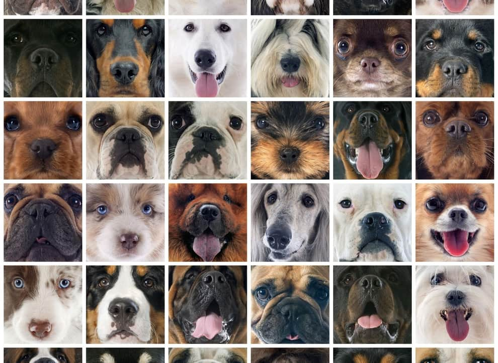

Казалось бы, ну что нового можно узнать о животном, которого человек приручил десятки тысяч лет назад? Но собаки — существа поистине уникальные, и самые удивительные их способности учёные начинают раскрывать только сейчас.
Удивительно, но факт: после общения с собаками у некоторых людей действительно нормализуется артериальное давление — это доказано научно. Игра с животным успокаивает, умиротворяет, что способствует увеличению выработки определенных гормонов, подавляющих гормоны стресса.
Когнитивные способности у собак гораздо более развиты, чем может показаться на первый взгляд. Согласно исследованиям собаки способны запомнить от 150 до 250 слов, что сравнимо с вокабуляром двухлетнего ребенка.
Видели, как иногда собаки при виде своих соплеменников прижимают хвост? Со стороны может показаться, что таким образом животное выражает страх. Но это не так. Хвостом собака прикрывает пахучие железы, расположенные у анального отверстия, по которым ее можно идентифицировать. Не хочет она, чтобы кто-то посторонний узнал ее личную информацию. Вы же не показываете кому попало свой паспорт?